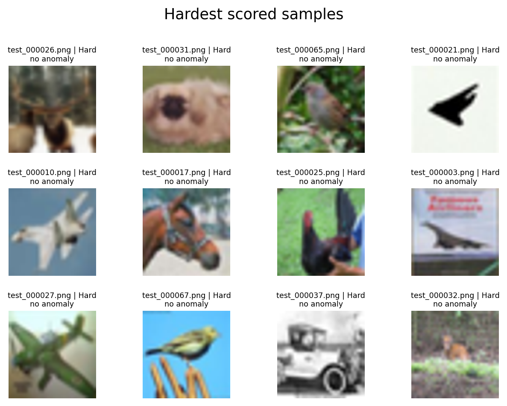
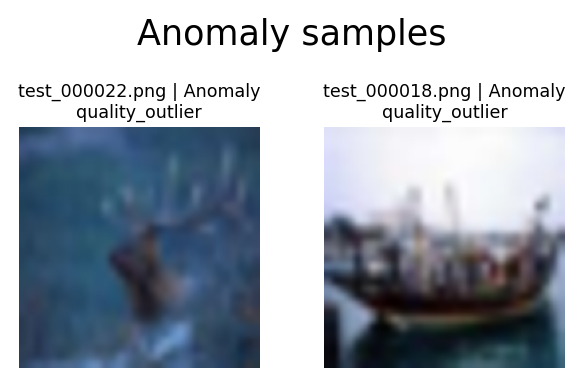

CIFAR-10 CLIP CPU Validation
Training-free relative difficulty prior. Scores are not accuracy predictions. Label rarity is reported independently and does not affect the composite score. Anomalies are listed separately from Easy, Medium, and Hard bands.
Dataset Counts
Score Interpretation
visual_semantic: Composite prior uses visual accessibility and CLIP semantic components.
Image entropy and frequency complexity are descriptive visual-complexity signals represented by visual_complexity_score. They are not assumed to imply higher task difficulty and do not contribute to the composite score. Image quality, visual accessibility risk, semantic complexity, and the final prior are shown separately. When CLIP is unavailable, the report is visual-only.
Difficulty Bands
{"Hard": 13, "Easy": 13, "Medium": 12, "Anomaly": 2}
Split Counts
{"train": 30, "val": 4, "test": 4, "excluded_anomaly": 2}
Class Distribution
{"train": {"dog": 4, "frog": 4, "airplane": 3, "bird": 3, "cat": 3, "horse": 3, "ship": 3, "truck": 3, "automobile": 2, "deer": 2}, "val": {"airplane": 1, "automobile": 1, "bird": 1, "horse": 1}, "test": {"automobile": 1, "cat": 1, "deer": 1, "truck": 1}, "excluded_anomaly": {"deer": 1, "ship": 1}}
Difficulty Distribution
{"train": {"Easy": 11, "Medium": 10, "Hard": 9}, "val": {"Hard": 3, "Easy": 1}, "test": {"Medium": 2, "Hard": 1, "Easy": 1}, "excluded_anomaly": {"Anomaly": 2}}
Leakage Risk
{"level": "low", "groups_spanning_splits": 0, "duplicate_groups_spanning_splits": 0, "messages": ["No group_id or duplicate-group leakage detected."]}
Hardest Scored Samples
| sample_id | rel_path | label | blur_laplacian_var | brightness | contrast | image_entropy | spectral_entropy | high_freq_energy_ratio | visual_quality_risk | visual_complexity_score | visual_accessibility_risk | visual_contribution | class_centroid_distance | class_confusion_risk | cross_class_margin | augmentation_stability | augmentation_instability | outlier_component | confusion_component | instability_component | semantic_complexity | semantic_contribution | difficulty_band | difficulty_score | difficulty_scope | anomaly_types | split |
|---|---|---|---|---|---|---|---|---|---|---|---|---|---|---|---|---|---|---|---|---|---|---|---|---|---|---|---|
| 8a6bc25698a34237051e | images/deer/test_000026.png | deer | 1422.8592 | 0.3915 | 0.2108 | 7.1032 | 0.5756 | 0.2191 | 0.0000 | 0.3863 | 0.6632 | 0.1989 | 0.1059 | 0.0000 | 0.0471 | 0.9934 | 0.0066 | 0.9737 | 0.5132 | 0.7895 | 0.7526 | 0.5268 | Hard | 0.7258 | visual_semantic | train | |
| a19a804b3dd6f7128a68 | images/dog/test_000031.png | dog | 524.1631 | 0.5072 | 0.1274 | 6.7445 | 0.5674 | 0.2144 | 0.0000 | 0.2447 | 0.7763 | 0.2329 | 0.0780 | 0.0000 | 0.0487 | 0.9754 | 0.0246 | 0.6579 | 0.5132 | 1.0000 | 0.6684 | 0.4679 | Hard | 0.7008 | visual_semantic | train | |
| a78cec95b7cec07f0cab | images/bird/test_000065.png | bird | 3873.5984 | 0.3682 | 0.1583 | 7.1328 | 0.7126 | 0.4405 | 0.0000 | 0.7692 | 0.4421 | 0.1326 | 0.1226 | 0.0000 | 0.0793 | 0.9893 | 0.0107 | 1.0000 | 0.5132 | 0.9211 | 0.7895 | 0.5526 | Hard | 0.6853 | visual_semantic | train | |
| 0e47fb2696856b631b38 | images/airplane/test_000021.png | airplane | 3427.6154 | 0.8579 | 0.2758 | 3.6663 | 0.5416 | 0.1723 | 0.0000 | 0.1045 | 0.3421 | 0.1026 | 0.0908 | 0.0000 | 0.0847 | 0.9855 | 0.0145 | 0.8947 | 0.5132 | 0.9737 | 0.7579 | 0.5305 | Hard | 0.6332 | visual_semantic | train | |
| cd141d16c33726dab14a | images/airplane/test_000010.png | airplane | 844.6476 | 0.5422 | 0.1052 | 5.5069 | 0.6664 | 0.4112 | 0.0000 | 0.5476 | 0.8395 | 0.2518 | 0.0819 | 0.0000 | 0.1122 | 0.9989 | 0.0011 | 0.7632 | 0.5132 | 0.1579 | 0.5421 | 0.3795 | Hard | 0.6313 | visual_semantic | val | |
| 621f4548728d8b520a19 | images/horse/test_000017.png | horse | 2430.3943 | 0.5175 | 0.2001 | 7.1196 | 0.6600 | 0.3589 | 0.0000 | 0.6558 | 0.4737 | 0.1421 | 0.0863 | 0.0000 | 0.0605 | 0.9961 | 0.0039 | 0.8684 | 0.5132 | 0.6316 | 0.6789 | 0.4753 | Hard | 0.6174 | visual_semantic | train | |
| 3b061a4c9d1b587069ce | images/bird/test_000025.png | bird | 2257.6499 | 0.4680 | 0.2030 | 6.9514 | 0.5502 | 0.1950 | 0.0000 | 0.2284 | 0.4947 | 0.1484 | 0.0817 | 0.0000 | 0.0593 | 0.9927 | 0.0073 | 0.7368 | 0.5132 | 0.8421 | 0.6684 | 0.4679 | Hard | 0.6163 | visual_semantic | val | |
| 6de92853adf371aa759a | images/airplane/test_000003.png | airplane | 2032.4153 | 0.5971 | 0.2096 | 6.9039 | 0.4936 | 0.2157 | 0.0000 | 0.1934 | 0.5500 | 0.1650 | 0.0977 | 0.0000 | 0.0804 | 0.9982 | 0.0018 | 0.9211 | 0.5132 | 0.3421 | 0.6421 | 0.4495 | Hard | 0.6145 | visual_semantic | train | |
| 25418a6641d14c5ddb48 | images/airplane/test_000027.png | airplane | 1561.2732 | 0.5492 | 0.2269 | 7.2487 | 0.5148 | 0.2093 | 0.0000 | 0.2924 | 0.5526 | 0.1658 | 0.0804 | 0.0000 | 0.0477 | 0.9940 | 0.0060 | 0.6842 | 0.5132 | 0.7368 | 0.6263 | 0.4384 | Hard | 0.6042 | visual_semantic | train | |
| 1a5176845b094b5e4ae9 | images/bird/test_000067.png | bird | 2795.6445 | 0.6404 | 0.1155 | 5.6148 | 0.7681 | 0.6722 | 0.0000 | 0.6868 | 0.6816 | 0.2045 | 0.0747 | 0.0000 | 0.0517 | 0.9970 | 0.0030 | 0.6316 | 0.5132 | 0.5263 | 0.5632 | 0.3942 | Hard | 0.5987 | visual_semantic | train | |
| 215e0eee4f865f6c9881 | images/automobile/test_000037.png | automobile | 7149.4791 | 0.6492 | 0.2721 | 7.5370 | 0.5862 | 0.3212 | 0.0000 | 0.6776 | 0.2158 | 0.0647 | 0.1019 | 0.0000 | 0.0680 | 0.9922 | 0.0078 | 0.9474 | 0.5132 | 0.8684 | 0.7579 | 0.5305 | Hard | 0.5953 | visual_semantic | val | |
| 719bacd40656fbcd6a5b | images/deer/test_000032.png | deer | 1995.0533 | 0.5119 | 0.1295 | 6.7211 | 0.5308 | 0.2687 | 0.0000 | 0.2879 | 0.6026 | 0.1808 | 0.0827 | 0.0000 | 0.0429 | 0.9983 | 0.0017 | 0.7895 | 0.5132 | 0.3158 | 0.5842 | 0.4089 | Hard | 0.5897 | visual_semantic | test | |
| f6f4001ddccf4e02f523 | images/frog/test_000007.png | frog | 900.9915 | 0.3695 | 0.1475 | 6.7132 | 0.5890 | 0.2570 | 0.0000 | 0.3571 | 0.8500 | 0.2550 | 0.0736 | 0.0000 | 0.0357 | 0.9995 | 0.0005 | 0.6053 | 0.5132 | 0.0263 | 0.4526 | 0.3168 | Hard | 0.5718 | visual_semantic | train | |
| 574427a428644b8d63f6 | images/deer/test_000036.png | deer | 1582.1557 | 0.4992 | 0.1370 | 6.9551 | 0.6273 | 0.3154 | 0.0000 | 0.5413 | 0.6184 | 0.1855 | 0.0640 | 0.0000 | 0.0586 | 0.9944 | 0.0056 | 0.5000 | 0.5132 | 0.7105 | 0.5474 | 0.3832 | Medium | 0.5687 | visual_semantic | train | |
| 6d45bb77f7844e3c6271 | images/horse/test_000048.png | horse | 1395.4392 | 0.4642 | 0.1207 | 6.7728 | 0.6188 | 0.3453 | 0.0000 | 0.5229 | 0.7658 | 0.2297 | 0.0601 | 0.0000 | 0.1000 | 0.9969 | 0.0031 | 0.3947 | 0.5132 | 0.5526 | 0.4737 | 0.3316 | Medium | 0.5613 | visual_semantic | train | |
| 183cf6869ecc7235c80f | images/dog/test_000024.png | dog | 1556.4852 | 0.5916 | 0.1521 | 7.0470 | 0.5875 | 0.2666 | 0.0000 | 0.4553 | 0.7316 | 0.2195 | 0.0720 | 0.0000 | 0.0713 | 0.9988 | 0.0012 | 0.5789 | 0.5132 | 0.1842 | 0.4737 | 0.3316 | Medium | 0.5511 | visual_semantic | train | |
| 074314aa1a319efdfc16 | images/frog/test_000004.png | frog | 3417.6580 | 0.4487 | 0.1544 | 7.1532 | 0.7010 | 0.4754 | 0.0000 | 0.7868 | 0.4395 | 0.1318 | 0.0849 | 0.0000 | 0.0479 | 0.9986 | 0.0014 | 0.8158 | 0.5132 | 0.2105 | 0.5737 | 0.4016 | Medium | 0.5334 | visual_semantic | train | |
| f8c9f1ee8b4968aab37d | images/truck/test_000023.png | truck | 5648.5785 | 0.3837 | 0.2122 | 7.3218 | 0.6984 | 0.5407 | 0.0000 | 0.8403 | 0.2658 | 0.0797 | 0.0862 | 0.0000 | 0.0693 | 0.9973 | 0.0027 | 0.8421 | 0.5132 | 0.5000 | 0.6421 | 0.4495 | Medium | 0.5292 | visual_semantic | train | |
| 3e40767faf11b4527b0a | images/cat/test_000046.png | cat | 1021.5042 | 0.4344 | 0.2122 | 7.3088 | 0.5278 | 0.2092 | 0.0000 | 0.3103 | 0.6500 | 0.1950 | 0.0488 | 0.0000 | 0.0240 | 0.9891 | 0.0109 | 0.1842 | 0.5132 | 0.9474 | 0.4684 | 0.3279 | Medium | 0.5229 | visual_semantic | train | |
| 57d05dee5738b0d488e7 | images/cat/test_000053.png | cat | 2473.2215 | 0.3648 | 0.2089 | 7.4587 | 0.6390 | 0.3507 | 0.0000 | 0.7726 | 0.5342 | 0.1603 | 0.0625 | 0.0000 | 0.0485 | 0.9962 | 0.0038 | 0.4474 | 0.5132 | 0.6053 | 0.5053 | 0.3537 | Medium | 0.5139 | visual_semantic | test | |
| fa4ea3284a7d4acf160c | images/bird/test_000035.png | bird | 3264.0683 | 0.3520 | 0.2359 | 7.4707 | 0.5310 | 0.1766 | 0.0000 | 0.3908 | 0.4289 | 0.1287 | 0.0812 | 0.0000 | 0.0280 | 0.9990 | 0.0010 | 0.7105 | 0.5132 | 0.1053 | 0.5105 | 0.3574 | Medium | 0.4861 | visual_semantic | train | |
| c14de377348479f68eb7 | images/cat/test_000000.png | cat | 3166.4746 | 0.4306 | 0.1489 | 6.8732 | 0.7100 | 0.4491 | 0.0000 | 0.6708 | 0.5237 | 0.1571 | 0.0626 | 0.0000 | 0.0648 | 0.9978 | 0.0022 | 0.4737 | 0.5132 | 0.3684 | 0.4684 | 0.3279 | Medium | 0.4850 | visual_semantic | train | |
| 2648316eef6d308f77fe | images/automobile/test_000066.png | automobile | 2257.2322 | 0.4654 | 0.2089 | 7.2801 | 0.5523 | 0.2215 | 0.0000 | 0.4142 | 0.4947 | 0.1484 | 0.0591 | 0.0000 | 0.0879 | 0.9950 | 0.0050 | 0.3421 | 0.5132 | 0.6842 | 0.4789 | 0.3353 | Medium | 0.4837 | visual_semantic | test | |
| 3760ac3919947ceaf4c0 | images/automobile/test_000006.png | automobile | 3537.4611 | 0.2938 | 0.2054 | 7.1294 | 0.6705 | 0.4512 | 0.0000 | 0.7255 | 0.4447 | 0.1334 | 0.0584 | 0.0000 | 0.0968 | 0.9964 | 0.0036 | 0.3158 | 0.5132 | 0.5789 | 0.4474 | 0.3132 | Medium | 0.4466 | visual_semantic | train | |
| 04639f458f6479403fa6 | images/dog/test_000012.png | dog | 1717.6925 | 0.3772 | 0.1985 | 7.3406 | 0.5288 | 0.2319 | 0.0000 | 0.4063 | 0.6711 | 0.2013 | 0.0500 | 0.0000 | 0.0389 | 0.9985 | 0.0015 | 0.2105 | 0.5132 | 0.2368 | 0.3368 | 0.2358 | Medium | 0.4371 | visual_semantic | train | |
| 942e945fda45edf928cd | images/ship/test_000002.png | ship | 1571.2310 | 0.5126 | 0.2533 | 7.6015 | 0.4477 | 0.1932 | 0.0000 | 0.3742 | 0.4474 | 0.1342 | 0.0539 | 0.0000 | 0.0943 | 0.9960 | 0.0040 | 0.2368 | 0.5132 | 0.6579 | 0.4316 | 0.3021 | Easy | 0.4363 | visual_semantic | train | |
| 299eed45bf2088fc558b | images/frog/test_000005.png | frog | 1778.2725 | 0.3929 | 0.1397 | 7.0329 | 0.6094 | 0.3126 | 0.0000 | 0.5155 | 0.7053 | 0.2116 | 0.0466 | 0.0000 | 0.0247 | 0.9983 | 0.0017 | 0.1053 | 0.5132 | 0.2895 | 0.3053 | 0.2137 | Easy | 0.4253 | visual_semantic | train | |
| 5c447c9cdd7cde4a84ae | images/cat/test_000008.png | cat | 1343.8368 | 0.6395 | 0.1663 | 7.0461 | 0.6183 | 0.3293 | 0.0000 | 0.5592 | 0.8000 | 0.2400 | 0.0434 | 0.0000 | 0.0627 | 0.9990 | 0.0010 | 0.0789 | 0.5132 | 0.1316 | 0.2632 | 0.1842 | Easy | 0.4242 | visual_semantic | train | |
| 770b019405d08c14260d | images/horse/test_000020.png | horse | 3726.9225 | 0.4671 | 0.2433 | 7.3998 | 0.6032 | 0.2905 | 0.0000 | 0.6503 | 0.2211 | 0.0663 | 0.0692 | 0.0000 | 0.0761 | 0.9978 | 0.0022 | 0.5526 | 0.5132 | 0.3947 | 0.5053 | 0.3537 | Easy | 0.4200 | visual_semantic | train | |
| 409728ddaec989f26d9b | images/frog/test_000019.png | frog | 3269.6342 | 0.4491 | 0.2136 | 7.4023 | 0.5986 | 0.2580 | 0.0000 | 0.6158 | 0.3421 | 0.1026 | 0.0468 | 0.0000 | 0.0641 | 0.9909 | 0.0091 | 0.1579 | 0.5132 | 0.8947 | 0.4474 | 0.3132 | Easy | 0.4158 | visual_semantic | train | |
| 7da211a018e031e61c91 | images/ship/test_000015.png | ship | 3120.7397 | 0.5255 | 0.1860 | 7.3559 | 0.6858 | 0.3882 | 0.0000 | 0.7887 | 0.4342 | 0.1303 | 0.0594 | 0.0000 | 0.0631 | 0.9984 | 0.0016 | 0.3684 | 0.5132 | 0.2632 | 0.4053 | 0.2837 | Easy | 0.4139 | visual_semantic | train | |
| 34d51cd0664a61a9aad1 | images/automobile/test_000009.png | automobile | 3084.5687 | 0.5457 | 0.2508 | 7.5779 | 0.5282 | 0.2375 | 0.0000 | 0.4955 | 0.3526 | 0.1058 | 0.0650 | 0.0000 | 0.0578 | 0.9993 | 0.0007 | 0.5263 | 0.5132 | 0.0526 | 0.4263 | 0.2984 | Easy | 0.4042 | visual_semantic | train | |
| 5ded0916aab99ef303e9 | images/horse/test_000013.png | horse | 5195.4442 | 0.2903 | 0.2861 | 7.2348 | 0.5700 | 0.2371 | 0.0000 | 0.4397 | 0.2368 | 0.0711 | 0.0622 | 0.0000 | 0.0831 | 0.9974 | 0.0026 | 0.4211 | 0.5132 | 0.4474 | 0.4632 | 0.3242 | Easy | 0.3953 | visual_semantic | val | |
| 7fe6dd953d9d8220a6e9 | images/ship/test_000001.png | ship | 2463.0651 | 0.6031 | 0.3065 | 7.0491 | 0.4319 | 0.2151 | 0.0000 | 0.2211 | 0.3763 | 0.1129 | 0.0413 | 0.0000 | 0.1207 | 0.9928 | 0.0072 | 0.0526 | 0.5132 | 0.8158 | 0.3895 | 0.2726 | Easy | 0.3855 | visual_semantic | train | |
| 685b1fb88d41642e953a | images/truck/test_000014.png | truck | 4407.7894 | 0.4319 | 0.2050 | 7.3905 | 0.6820 | 0.4870 | 0.0000 | 0.8411 | 0.3158 | 0.0947 | 0.0539 | 0.0000 | 0.0961 | 0.9973 | 0.0027 | 0.2632 | 0.5132 | 0.4737 | 0.4053 | 0.2837 | Easy | 0.3784 | visual_semantic | test | |
| 4d1a216fa60de254ec6b | images/truck/test_000011.png | truck | 4762.5954 | 0.5185 | 0.2520 | 7.4417 | 0.5735 | 0.2727 | 0.0000 | 0.5987 | 0.1368 | 0.0411 | 0.0547 | 0.0000 | 0.0885 | 0.9935 | 0.0065 | 0.2895 | 0.5132 | 0.7632 | 0.4737 | 0.3316 | Easy | 0.3726 | visual_semantic | train | |
| 891b85701b107596bd21 | images/dog/test_000016.png | dog | 3360.2461 | 0.5005 | 0.2976 | 7.6283 | 0.5642 | 0.1892 | 0.0000 | 0.4700 | 0.1579 | 0.0474 | 0.0368 | 0.0000 | 0.0713 | 0.9977 | 0.0023 | 0.0263 | 0.5132 | 0.4211 | 0.3000 | 0.2100 | Easy | 0.2574 | visual_semantic | train | |
| ef7abbd1c38d0e032a40 | images/truck/test_000028.png | truck | 4171.0077 | 0.5041 | 0.2542 | 7.6687 | 0.5983 | 0.2518 | 0.0000 | 0.6613 | 0.1211 | 0.0363 | 0.0467 | 0.0000 | 0.0603 | 0.9991 | 0.0009 | 0.1316 | 0.5132 | 0.0789 | 0.2737 | 0.1916 | Easy | 0.2279 | visual_semantic | train |
Hard Sample Preview

Anomaly Samples
| sample_id | rel_path | label | blur_laplacian_var | brightness | contrast | image_entropy | spectral_entropy | high_freq_energy_ratio | visual_quality_risk | visual_complexity_score | visual_accessibility_risk | visual_contribution | class_centroid_distance | class_confusion_risk | cross_class_margin | augmentation_stability | augmentation_instability | outlier_component | confusion_component | instability_component | semantic_complexity | semantic_contribution | difficulty_band | difficulty_score | difficulty_scope | anomaly_types | split |
|---|---|---|---|---|---|---|---|---|---|---|---|---|---|---|---|---|---|---|---|---|---|---|---|---|---|---|---|
| 8c31ee8ff0f0f06beaa9 | images/deer/test_000022.png | deer | 383.9001 | 0.2919 | 0.0573 | 5.7091 | 0.6685 | 0.3421 | 0.1667 | n/a | n/a | n/a | n/a | n/a | n/a | n/a | n/a | n/a | n/a | n/a | n/a | n/a | Anomaly | n/a | anomaly | quality_outlier | excluded_anomaly |
| 1b11f7719afd8e8a45ce | images/ship/test_000018.png | ship | 2092.2519 | 0.5382 | 0.3503 | 7.3527 | 0.3199 | 0.1333 | 0.1667 | n/a | n/a | n/a | n/a | n/a | n/a | n/a | n/a | n/a | n/a | n/a | n/a | n/a | Anomaly | n/a | anomaly | quality_outlier | excluded_anomaly |

Warnings
- Actual train ratio 0.789 differs from requested 0.700 by more than 0.05.